東京大学 2019年 理科 第4問
問題
nを1以上の整数とする。
(1) 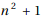と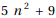の最大公約数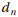を求めよ。
(2) 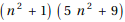は整数の2乗にならないことを示せ。
解答
(1)
ユークリッドの互除法を使うと、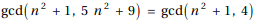
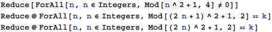
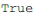
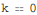
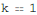
だから、はnが奇数のとき偶数だが4の倍数にならず、nが偶数の時は奇数。
よって求める最大公約数はnが奇数のとき2、nが偶数のとき1。
(2)
(1)よりnが偶数の時、とは互いに素なので、これらはともに平方数となる。しかし
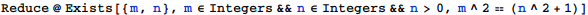
だから、が平方数となることはないのでは平方数にはならない。
nが奇数の時、との最大公約数は2なので、とすると、A,Bはともに平方数となる。しかし
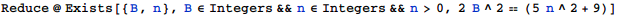

だから、Bは平方数とならない。
以上より、題意は示された。
補足・感想
Mathematica一発、というわけには行かず。